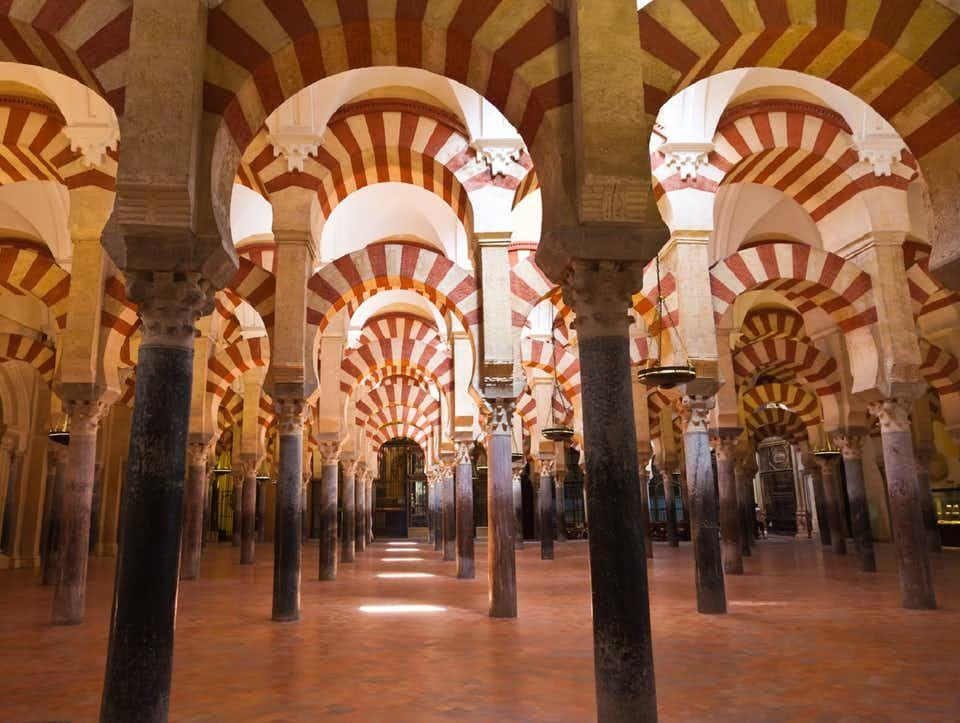

Descripción del monumento
Se accede por la Puerta del Perdón (lado norte), de estilo mudéjar (1477), donde se observan las hileras de naranjos y palmeras, y las fuentes y los arcos de herradura que lo rodean. Junto a la puerta se levanta la mezquita que se compone de tres partes: "El Patio de los Naranjos", que en tiempos del Califato era el "Patio de las Abluciones" (conserva buena parte de su aspecto original), el alminar desmochado parcialmente y rodeado, a principios del siglo XVII, de un «encofrado» de estilo herreriano. Interior de la Mezquita-Catedral de Córdoba. Vista exterior de la Mezquita-Catedral de Córdoba. La puerta de Las Palmas da acceso a la mezquita: hay un bosque de 1.300 columnas de mármol, jaspe y granito sobre las que se apoyan trescientos sesenta y cinco arcos de herradura bicolores. El mihrab es un joyel de mármol, estuco y mosaicos bizantinos brillantemente coloreados sobre fondo de oro y bronce, además de cobre y plata. En el lucernario se conservan los arcos lobulados de los muros y la cúpula. En la cabecera destacan los arcos, los mosaicos del muro y la estructura y decoración de las cúpulas a base de arcos cruzados. Tras la conquista de Córdoba por los cristianos, éstos utilizaron la mezquita para celebrar su culto, pero en el siglo XVI, cuando el islam fue definitivamente expulsado de la península Ibérica, los vencedores quisieron adecuarla a sus creencias: construyeron una catedral renacentista en sus naves centrales, a cargo de Hernán Ruiz, llamado "el viejo", y luego, de su hijo, en pleno corazón de la mezquita, alterando la perspectiva original. De la antigua iglesia cristiana, destruida para construir en su solar la mezquita, apenas quedó rastro y solo a raíz de algunos trabajos iniciados en la década de 1940 se lograron recuperar algunos de sus restos en el subsuelo de la Mezquita-Catedral, fundamentalmente mosaicos y los pilares.